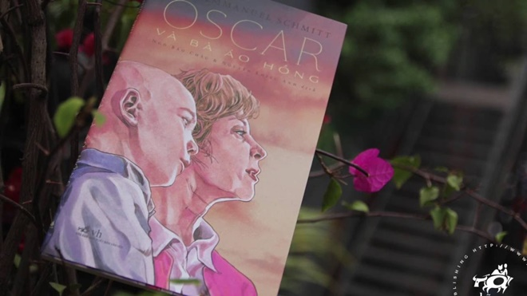

Tôi nhớ đã có người từng nói với mình như vậy: “ Dù trong hoàn cảnh nào cũng phải luôn suy nghĩ theo hướng tích cực thì kiểu gì cũng thành công. Ít nhất cũng tự làm mình cảm thấy tốt hơn trước những khó khăn”. Lúc đó tôi đã nghĩ người đó thật buồn cười. Làm sao trong cái mớ khó khăn đầy căng thẳng đấy mà người ta có thể nghĩ tích cực được chứ? Thế nhưng sau khi những trang sách của cuốn truyện ngắn sau tôi đã hoàn toàn có một suy nghĩ khác. Đó chính là quyển sách “Oscar và bà áo hồng” của nhà văn Schmitt.  Schmitt tên đầy đủ là Eric- Emmanuel Schmitt là một nhà văn nổi tiếng người Pháp-Bỉ. Ông xuất thân từ một gia đình trí thức và bản thân ông cũng là một tiến sĩ triết học. Sau một thời gian làm giáo viên, ông hoàn toàn chuyển sang sang tác với vở kịch đầu tay là “Đêm Valognes”. Sau sự thành công của vở kịch trên, tên tuổi của ông đã ngày càng được biết đến rộng rãi. Bằng chứng là việc sách của ông đã được dịch ra hơn 40 thứ tiếng. Tiêp nối đó, tổng số các giải thưởng mà Eric- Emmanuel Schmitt nhận được vào khoảng 30 giải lớn nhỏ khác nhau. Một số những tác phẩm kinh điển khác của ông mà các bạn cũng có thể đón đọc như: “Nửa kia của Hitler”, “Bản concerto tưởng nhớ một thiên thần”, “Chàng sumo không thể béo” hay “Một ngày mưa đẹp trời”. Oscar và bà áo hồng được viết bởi nhà văn Eric-Emmanuel Schmitt. Ngay khi ra mắt, cuốn sách nhanh chóng gặt hái nhiều thành công, với vô số giải thưởng như giải Chronos, giải Jean Bernard của viện hàn lâm Y học… Bên cạnh đó, tác phẩm còn được chuyển thể thành phim, kịch và luôn được đánh giá cao trong lòng công chúng. Ở Việt Nam, tác phẩm được giáo sư Ngô Bảo Châu và Nguyễn Khiếu Anh đồng dịch, xuất bản năm 2015.Oscar và bà áo hồng là những bức thư gửi đến Chúa của cậu bé Oscar 10 tuổi, biệt danh Sọ Trứng bởi cậu có cái đầu trọc lốc - hệ quả của những đợt điều trị hóa chất. Cậu kể cho Chúa nghe về căn bệnh ung thư của mình, về bà Hoa Hồng - người tình nguyện viên già luôn ở bên Oscar trong bệnh viện. Có thể nói, chính bà Hoa Hồng đã trao cho cậu bé hy vọng sống trong những ngày còn lại của cuộc đời, chi tiết bà kể với cậu bé về truyền thuyết:“Ở quê bà, Oscar ạ, có một truyền thuyết kể rằng trong 12 ngày cuối cùng của một năm, người ta có thể dự đoán được 12 tháng của năm tiếp theo sẽ như thế nào. Chỉ cần quan sát từng ngày một để có được bức tranh thu nhỏ của từng tháng… Đấy là truyền thuyết. Ta muốn bà cháu mình thử chơi trò đó, cháu và ta. Đặc biệt là cháu. Từ ngày hôm nay cháu sẽ quan sát mỗi ngày và tự nhủ là mỗi ngày tương ứng với 10 năm”.Chính truyền thuyết hư cấu này đã mang đến hy vọng sống cho cậu bé.Từ giây phút ấy, mỗi ngày trôi qua đối với cậu bé Oscar đều là một ngày tuyệt diệu. Cậu được sống trọn vẹn với ý muốn và tình cảm của mình, trải qua những năm tháng “dậy thì” đầy rắc rối với vài người bạn trong bệnh viện và biết rung động trước cô bạn gái. Hay những năm tháng “tuổi trẻ” đáng nhớ khi Oscar dũng cảm đứng ra bảo vệ người yêu, kết hôn và ở bên cạnh “vợ” của mình trong cuộc phẫu thuật quan trọng, giải quyết bất hòa với bố mẹ trong đêm Giáng Sinh… Rồi đến độ tuổi “xế chiều”, cậu trầm tư suy nghĩ về tất cả những gì đã trải qua trong đời mà không hề hối hận… Oscar sống hết mình, học cách yêu thương và nghĩ về người xung quanh, về cuộc sống nhiều hơn là cái chết. Từng là một cậu bé luôn trách bố mẹ, gọi họ là “nhát cáy” vì không dám cười nói, gần gũi với cậu như khi khỏe mạnh. Nhưng nhờ bà Hoa Hồng, Oscar đã hiểu ra nỗi đau, việc né tránh của họ khi phải chứng kiến con mình ngày càng yếu và có thể ra đi bất cứ lúc nào. Thấu được nỗi lòng cha mẹ, cậu không còn trách họ, ngược lại Oscar đã can đảm nói “Con yêu bố mẹ, hãy luôn ở bên con”. Và chính câu nói ấy đã khiến bố mẹ Oscar thức tỉnh, can đảm để dẹp nỗi sợ mất con, thay vào đó là sự yêu thương con trọn vẹn từng ngày. Đối với vị bác sĩ tận tụy Dusseldorf, Oscar đã suy nghĩ trưởng thành hơn, cậu nói:“Bác sĩ hãy sống thoải mái lên vì bác sĩ đã cố gắng chữa trị cho cháu hết sức có thể rồi, đừng coi đó là tội lỗi để mà ôm rơm nặng bụng…”. Chính câu nói ấy của Oscar đã khiến Dusseldorf mỉm cười nhẹ nhõm, suy nghĩ lạc quan, tích cực hơn để tiếp tục công việc cứu người cao cả. Chỉ vỏn vẹn hơn 100 trang sách, nhưng Schmitt đã kể cho chúng ta thấy những nỗi buồn, nỗi đau, niềm hy vọng và cả tình yêu giữa con người với con người qua cái nhìn của một cậu bé và cả cảm xúc trước khi lìa xa thế giới của rất nhiều người. Qua hình ảnh Oscar, tác giả muốn nhắn nhủ với chúng ta rằng trong cuộc sống hiện tại, hàng ngàn “Oscar” đang sống những ngày tháng ngắn ngủi xung quanh chúng ta. Bạn hãy trân trọng, yêu cuộc sống này bởi không phải ai cũng có cơ hội để thực hiện điều đó. Nếu ta có tình cảm với ai đó đừng ngại bày tỏ, buồn hãy tìm người chia sẻ, muốn gì nhất định phải thực hiện ngay... Nhấn vào đây để mua sách